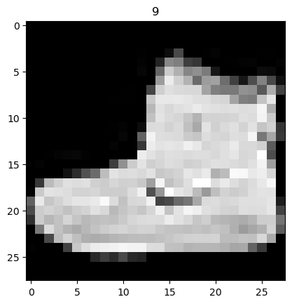

import torch
from torch import nn
from torch.utils.data import DataLoader
from torchvision import datasets
from torchvision.transforms import ToTensorFirst portion, learning via just FashionMNIST. Skip this, I am just including it to show beginners that I too don’t know what I’m doing
training_data = datasets.FashionMNIST(
root="data",
train=True,
download=True,
transform=ToTensor(),
)
test_data = datasets.FashionMNIST(
root="data",
train=False,
download=True,
transform=ToTensor(),
)# plot an example of the data
import matplotlib.pyplot as plt
plt.imshow(training_data.data[0], cmap='gray')
plt.title('%i' % training_data.targets[0])
plt.show()
batch_size = 64
# Create data loaders.
train_dataloader = DataLoader(training_data, batch_size=batch_size,shuffle=True)
test_dataloader = DataLoader(test_data, batch_size=batch_size,shuffle=True)
for X, y in test_dataloader:
print(f"Shape of X [N, C, H, W]: {X.shape}")
print(f"Shape of y: {y.shape} {y.dtype}")
breakShape of X [N, C, H, W]: torch.Size([64, 1, 28, 28])
Shape of y: torch.Size([64]) torch.int64device = (
"cuda"
if torch.cuda.is_available()
else "mps"
if torch.backends.mps.is_available()
else "cpu"
)
print(f"Using {device} device")Using cuda device# Define model
class NeuralNetwork(nn.Module):
def __init__(self):
super().__init__()
self.conv_stack = nn.Sequential( # a convolution, then an activation function, then a maxpool
nn.Conv2d(1, 16, 5),
nn.ReLU(),
nn.MaxPool2d(2)
)
self.conv_stack_2 = nn.Sequential( # a convolution, then an activation function, then a maxpool
nn.Conv2d(16, 32, 5),
nn.ReLU(),
nn.MaxPool2d(2),
)
self.out = nn.Linear(64, 512) # fully connected layer
def forward(self, x):
x = self.conv_stack(x)
x = self.conv_stack_2(x)
x = x.view(x.size(0), -1) # flatten the output to allow for a linear layer (lines up the data along 1d vector
output = self.out(x)
return output
model = NeuralNetwork().to(device)
print(model)NeuralNetwork(
(conv_stack): Sequential(
(0): Conv2d(1, 16, kernel_size=(5, 5), stride=(1, 1))
(1): ReLU()
(2): MaxPool2d(kernel_size=2, stride=2, padding=0, dilation=1, ceil_mode=False)
)
(conv_stack_2): Sequential(
(0): Conv2d(16, 32, kernel_size=(5, 5), stride=(1, 1))
(1): ReLU()
(2): MaxPool2d(kernel_size=2, stride=2, padding=0, dilation=1, ceil_mode=False)
)
(out): Linear(in_features=64, out_features=512, bias=True)
)loss_fn = nn.CrossEntropyLoss()
optimizer = torch.optim.SGD(model.parameters(), lr=1e-3)def train(dataloader, model, loss_fn, optimizer):
size = len(dataloader.dataset)
model.train()
for batch, (X, y) in enumerate(dataloader): #X,y is images,labels
X, y = X.to(device), y.to(device)
#X,y is images,labels
# Compute prediction error
pred = model(X)
loss = loss_fn(pred, y)
# Backpropagation
loss.backward()
optimizer.step()
optimizer.zero_grad()
#if batch % 100 == 0:
# loss, current = loss.item(), (batch + 1) * len(X)
# print(f"loss: {loss:>7f} [{current:>5d}/{size:>5d}]")def test(dataloader, model, loss_fn):
size = len(dataloader.dataset)
num_batches = len(dataloader)
model.eval()
test_loss, correct = 0, 0
with torch.no_grad():
for X, y in dataloader:
X, y = X.to(device), y.to(device)
pred = model(X)
test_loss += loss_fn(pred, y).item()
correct += (pred.argmax(1) == y).type(torch.float).sum().item()
test_loss /= num_batches
correct /= size
print(f"Test Error: \n Accuracy: {(100*correct):>0.1f}%, Avg loss: {test_loss:>8f} \n")epochs = 2
for t in range(epochs):
print(f"Epoch {t+1}\n-------------------------------")
train(train_dataloader, model, loss_fn, optimizer)
#test(test_dataloader, model, loss_fn)
print("Done!")Epoch 1
-------------------------------RuntimeError: mat1 and mat2 shapes cannot be multiplied (64x512 and 64x512)I tried, but I couldn’t figure out why two matrices of the same size couldn’t be multipled. I just moved on as I had what I needed anyway.
Training on CIFAR 10 (Pytorch default ConvNet)
import torch
import torchvision
import torchvision.transforms as transforms/home/jaxbulbrook/mambaforge/lib/python3.10/site-packages/tqdm/auto.py:21: TqdmWarning: IProgress not found. Please update jupyter and ipywidgets. See https://ipywidgets.readthedocs.io/en/stable/user_install.html
from .autonotebook import tqdm as notebook_tqdm# initial setup - getting and putting data into dataloaders
transform = transforms.Compose(
[transforms.ToTensor(),
transforms.Normalize((0.5, 0.5, 0.5), (0.5, 0.5, 0.5))]) # normalized so that the data ranges from -0.5 to 0.5 rather than 0 to 1
batch_size = 64
trainset = torchvision.datasets.CIFAR10(root='./data', train=True,
download=True, transform=transform)
trainloader = torch.utils.data.DataLoader(trainset, batch_size=batch_size,
shuffle=True, num_workers=2)
testset = torchvision.datasets.CIFAR10(root='./data', train=False,
download=True, transform=transform)
testloader = torch.utils.data.DataLoader(testset, batch_size=batch_size,
shuffle=False, num_workers=2)
classes = ('plane', 'car', 'bird', 'cat',
'deer', 'dog', 'frog', 'horse', 'ship', 'truck')Downloading https://www.cs.toronto.edu/~kriz/cifar-10-python.tar.gz to ./data/cifar-10-python.tar.gz
Extracting ./data/cifar-10-python.tar.gz to ./data
Files already downloaded and verified100%|████████████████████████| 170498071/170498071 [00:25<00:00, 6785202.72it/s]# visualizing the data
import matplotlib.pyplot as plt
import numpy as np
# functions to show an image
def imshow(img):
img = img / 2 + 0.5 # unnormalize
npimg = img.numpy()
plt.imshow(np.transpose(npimg, (1, 2, 0)))
plt.show()
# get some random training images
dataiter = iter(trainloader)
images, labels = next(dataiter)
# show images
imshow(torchvision.utils.make_grid(images[:16],4))
# print labels
print(' '.join(f'{classes[labels[j]]:5s}' for j in range(16)))bird truck bird cat plane truck ship frog horse car truck car cat cat frog dog import torch.nn as nn
import torch.nn.functional as F
# The model itself, where the experiment happens
class Net(nn.Module):
def __init__(self):
super().__init__()
self.conv1 = nn.Conv2d(3, 6, 5)
self.pool = nn.MaxPool2d(2, 2)
self.conv2 = nn.Conv2d(6, 16, 5)
self.fc1 = nn.Linear(16 * 5 * 5, 120)
self.fc2 = nn.Linear(120, 84)
self.fc3 = nn.Linear(84, 10)
def forward(self, x):
x = self.pool(F.relu(self.conv1(x)))
x = self.pool(F.relu(self.conv2(x)))
x = torch.flatten(x, 1) # flatten all dimensions except batch
x = F.relu(self.fc1(x))
x = F.relu(self.fc2(x))
x = self.fc3(x)
return x
net = Net()import torch.optim as optim
criterion = nn.CrossEntropyLoss()
optimizer = optim.SGD(net.parameters(), lr=0.001, momentum=0.9)for epoch in range(3): # loop over the dataset multiple times
running_loss = 0.0
for i, data in enumerate(trainloader, 0):
# get the inputs; data is a list of [inputs, labels]
inputs, labels = data[0].to(device), data[1].to(device)
# zero the parameter gradients
optimizer.zero_grad()
# forward + backward + optimize
outputs = net(inputs)
loss = criterion(outputs, labels)
loss.backward()
optimizer.step()
# print statistics
running_loss += loss.item()
if i % 100 == 99: # print every 2000 mini-batches
print(f'[{epoch + 1}, {i + 1:5d}] loss: {running_loss / 2000:.3f}')
running_loss = 0.0
print('Finished Training')!pip install GPUtilCollecting GPUtil
Downloading GPUtil-1.4.0.tar.gz (5.5 kB)
Preparing metadata (setup.py) ... done
Building wheels for collected packages: GPUtil
Building wheel for GPUtil (setup.py) ... done
Created wheel for GPUtil: filename=GPUtil-1.4.0-py3-none-any.whl size=7393 sha256=2d4e54895a5f65494e3abe2977fb69c8874ac65d79685a8c325723e4dd999f64
Stored in directory: /home/jaxbulbrook/.cache/pip/wheels/a9/8a/bd/81082387151853ab8b6b3ef33426e98f5cbfebc3c397a9d4d0
Successfully built GPUtil
Installing collected packages: GPUtil
Successfully installed GPUtil-1.4.0import GPUtil
GPUtil.showUtilization()| ID | GPU | MEM |
------------------
| 0 | 5% | 23% |dataiter = iter(testloader)
images, labels = next(dataiter)
# print images
imshow(torchvision.utils.make_grid(images[:8]))
print('GroundTruth: ', ' '.join(f'{classes[labels[j]]:5s}' for j in range(8)))GroundTruth: cat ship ship plane frog frog car frog outputs = net(images)
_, predicted = torch.max(outputs, 1)
print('Predicted: ', ' '.join(f'{classes[predicted[j]]:5s}'
for j in range(8)))Predicted: cat ship ship ship cat frog car deer correct = 0
total = 0
# since we're not training, we don't need to calculate the gradients for our outputs
with torch.no_grad():
for data in testloader:
inputs, labels = data[0].to(device), data[1].to(device)
# calculate outputs by running images through the network
outputs = net(images)
# the class with the highest energy is what we choose as prediction
_, predicted = torch.max(outputs.data, 1)
total += labels.size(0)
correct += (predicted == labels).sum().item()
print(f'Accuracy of the network on the 10000 test images: {100 * correct // total} %')Accuracy of the network on the 10000 test images: 47 %Research paper implementation
The papers implemeted techniques are all already in there, not technologically feasible (multiple GPUs), or would not work on smaller data. The only thing I can change is data augmentation. The state of the art 10 years ago is the average now, wow!